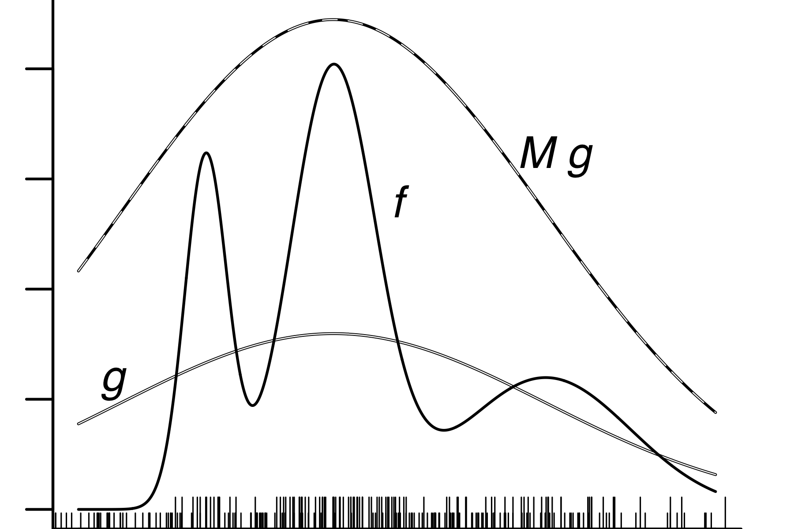

Monte Carlo methods
Context: Monte Carlo methods for POMP models
Let’s consider a general POMP model. As before, let \({y^*_{1:N}}\) be the data, and let the model consist of a latent process \(X_{0:N}\) and an observable process \(Y_{1:N}\). Then the likelihood function is \[\begin{equation*} \begin{aligned} \lik(\theta) =& f_{Y_{1:N}}({y^*_{1:N}} ; \theta) \\ =&\int\! f_{X_{t_0}}(x_{t_0} ; \theta)\prod_{n=1}^{N}\! f_{Y_n|X_{t_n}}(y^*_n\vert x_{t_n} ; \theta)\, f_{X_{t_n}|X_{t_{n-1}}}(x_{t_n}|x_{t_{n-1}} ; \theta)\, \dd{x}_{t_0}\dots \dd{x}_{t_N}. \end{aligned} \end{equation*}\] i.e., computation of the likelihood requires integrating over all possible values of the unobserved latent process at each time point. This is very hard to do, in general.
Let’s examine some Monte Carlo approaches for evaluating this and other difficult integrals. An excellent technical reference on Monte Carlo techniques is @Robert2004.
The fundamental theorem of Monte Carlo integration
The basic insight of Monte Carlo methods is that we can get a numerical approximation to a challenging integral, \[\begin{equation*} H = \int h(x)\,f(x)\,\dd{x}, \end{equation*}\] if we can simulate (i.e., generate random draws) from the distribution with probability density function \(f\).
We can estimate the error in this approximation, because the empirical variance \[\begin{equation*} V_J = \frac{1}{J-1}\,\sum_{j=1}^{J}\!\big[h(X_j)-H_j\big]^2 \end{equation*}\] approximates the true variance, \(\var{h(X)}=\expect{\Big(h(X)-\expect{h(X)}\Big)^2}\).
The standard error on the approximation \(H_{J}\approx\expect{h(X)}\) is therefore \(\sqrt{{V_J}/{J}}\). From the central limit theorem, the error is approximately normally distributed: \[\begin{equation*} H_J -\expect{h(X)}\sim\dist{Normal}{0,\sqrt{\frac{V_J}{J}}}. \end{equation*}\]
The fundamental theorem of Monte Carlo inspires us to give further thought to the problem of simulating from a desired density function \(f\), which can itself be a challenging problem. However, we first consider a useful generalization of the fundamental theorem.
Importance sampling
Sometimes it is difficult to sample directly from the distribution of \(X\). In this case, we can often make use of importance sampling, in which we generate random samples from another distribution (easier to simulate) and make the appropriate correction. Specifically, suppose we wish to compute \(\expect{h(X)}\), where \(X\sim f\), but it is difficult or impossible to draw random samples from \(f\). Suppose \(g\) is a probability distribution from which it is relatively easy to draw samples and let \(Y_{1:J}\stackrel{iid}{\sim}g\).
The observation that \[\begin{equation*} \expect{h(X)} = \int\!h(x)\,f(x)\,\dd{x} = \int\!h(x)\,\frac{f(x)}{g(x)}\,g(x)\,\dd{x}. \end{equation*}\] allows us to generalize the Monte Carlo integration theorem to give the Monte Carlo importance sampling theorem: \[\begin{equation*} \expect{h(X)} \approx \frac{1}{J}\,\sum_{j=1}^{J} h(Y_j)\,\frac{f(Y_j)}{g(Y_j)}. \end{equation*}\]
If we call \(w_j=f(Y_j)/g(Y_j)\) the importance weights, we can write \[\begin{equation*} \expect{h(X)} \approx \frac{1}{J}\,\sum_{j=1}^{J} w_j\,h(Y_j). \end{equation*}\]
Since \(\expect{w_j} = \expect{f(Y)/g(Y)}=1\), we can modify this formula to give a self-normalized importance sampling estimate, \[\begin{equation*} \expect{h(X)} \approx \frac{\sum w_j\,h(Y_j)}{\sum w_j}. \end{equation*}\]
The self-normalized estimate requires computation of \(w_j\) only up to a constant of proportionality.
The Monte Carlo variance associated with this estimate is \[\begin{equation*} \frac{\sum w_j\,(h(Y_j)-\overline{h})^2}{\sum w_j}. \end{equation*}\]
Obtaining accurate estimates requires some thought to the importance distribution \(g\). Specifically, if the tails of \(g\) are lighter than those of \(f\), the Monte Carlo variance will be inflated and the estimates can be unusable.
Simulation techniques for general distributions
Simulation refers to the generation of random variables. The general problem of simulation is: given a probability distribution \(f\), find a procedure that generates random draws from \(f\). This is a very important problem in scientific computing and much thought and effort has gone into producing reliable simulators for many basic random variables.
There are two basic ways of solving this problem:
- the transformation method.
- the rejection method.
The transformation method
This method works for discrete or continuous scalar random variables. Let \(f\) be the probability distribution function we seek to draw from (known as the target distribution) and \(F\) be the corresponding cumulative distribution function, i.e., \(F(x) = \int_{-\infty}^x f(v)\, dv\).
Let \(F^{-1}(u) = \inf\{x: F(x)\,\ge\,u\}\) be the inverse of \(F\).
A basic fact is that, if \(X\sim f\), then \(F(X)\sim\dist{Uniform}{0,1}\).
This suggests that, if we can compute \(F^{-1}\), we use the following algorithm to generate \(X\sim f\):
- Draw \(U\sim\dist{Uniform}{0,1}\).
- Let \(X = F^{-1}(U)\).
The rejection method
The transformation method is very efficient in that we are guaranteed to obtain a valid \(X\) from the density \(f\) for every \(U\sim\dist{Uniform}{0,1}\) we generate. Sometimes, however, we cannot compute the inverse of the cumulative distribution function, as required by the transformation method. Under such circumstances, the rejection method offers a less efficient, but more flexible, alternative.
Rejection method. If it is difficult to sample a point from \(D\) directly, we can propose uniform draws \(X\) from a larger set \(U\), and accept the proposals only if \(X\in{D}\). {#fig:rejection}
We’ll see how and why this method works in a simple case. Suppose a random variable \(X\) is uniformly distributed over a region \(D\subset\mathbb{R}^{d}\). This means that, for any \({A}\subset{D}\), \[\begin{equation*} \prob{X\in{A}}=\frac{m(A)}{m(D)}, \end{equation*}\] where \(m\) signifies the Lebesgue measure (i.e., ordinary Euclidean volume). To describe this situation, we say \(X\sim\dist{Uniform}{D}\).
Let’s suppose that we wish to simulate such an \(X\). If \(D\) has a complicated shape, we might not know how to directly simulate a random draw from it. However, if we know \(D\) is a subset of some nicer region \(U\subset\mathbb{R}^{d}\) and, in particular, if we know how to generate \(Y\sim\dist{Uniform}{U}\), then we can simply do so until \({Y}\in{D}\), at which point we take \(X=Y\). Since for any \(A\subset{D}\), \[\begin{equation*} \prob{X\in A} = \prob{Y\in A\vert Y\in D} = \frac{m(A)}{m(U)}\Big{/}\frac{m(D)}{m(U)} = \frac{m(A)}{m(D)}, \end{equation*}\] it follows that \(Y\sim\dist{Uniform}{D}\). Fig.~@ref(fig:rejection) illustrates.
Consider an analogy to throwing darts. If the darts are thrown in such a way as to be equally likely to land anywhere in \(U\), then those that do land in \(D\) are equally likely to land anywhere in \(D\).
A useful little fact allows us to extend the rejection method from uniform distributions to arbitrary densities. @Robert2004 refer to this as the fundamental theorem of simulation.
This suggests the following rejection method for simulating an arbitrary random variable, illustrated in Fig.~@ref(fig:sim). Let \(f\) be the target distribution and \(g\) be another density from which it is easy to simulate. Choose \(M\) so large that \(M\,g(x) \ge f(x)\) for all \(x\). Then the following procedure simulates \(X\!\sim\!f\):
- Draw \(Y\!\sim\!g\) and \(U\!\sim\!\dist{Uniform}{0,M}\). This is the proposal.
- If \(U \le \frac{f(Y)}{g(Y)}\), accept the proposal, i.e., let \(X=Y\), else repeat step 1.

The rejection method for simulating an arbitrary random variable. The target density is \(f\). We propose samples \(X\sim g\) and accept the proposal only if \(U\sim\dist{Uniform}{0,M}\) satisfies \(U\le f(X)/g(X)\). The short ticks at bottom show the proposals \(X\). The longer ticks show the accepted proposals, which are samples drawn from \(f\).